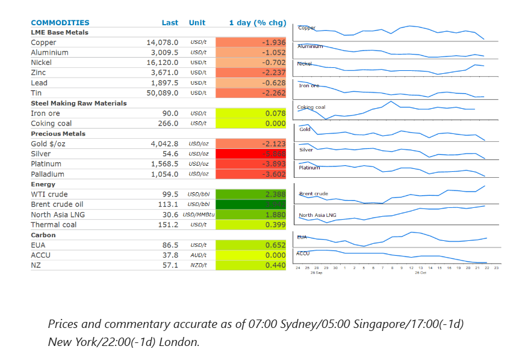
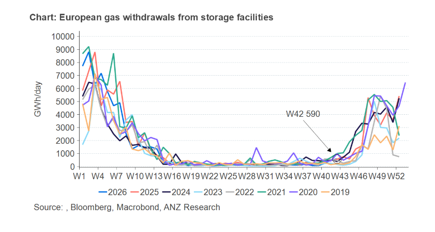

Rising attacks in the Middle East pushed the energy sector higher. AI-related stock selloff weighed on risk appetite across the rest of the complex.

Crude oilpushed higher, as rising hostilities in the Middle East raised concerns of further supply disruptions. A drone attack on Saudi Aramco’s Shaybah field killed two people, as the Yemen-based Houthis continue attacks on the kingdom. The Iran-backed group also claimed responsibility for the attacks on the Saudi port of Yanbu in the past 48 hours. The attacks have prompted the US to evacuate some personnel and family members from American embassies in the country, but have had little impact on oil production so far, although the increasing focus on energy infrastructure points to higher risks of a disruption.
This comes amid attacks from Iran on shipping in the Strait of Hormuz. At least 23 incidents involving ships attacked near Hormuz were logged in the first two weeks of October, according to data from naval groups in the region. Iran’s Islamic Revolutionary Guard Corps said it hit four “violating” oil tankers while transferring cargo in the northern Persian Gulf. These attacks have led to murmurings of a response from the US. The New York Times reported Israel and the US have developed plans for renewed strikes against Iran after the US midterm elections.
Natural gasin Europe and Asia pushed higher, as the prospect of a recovery in supply from the Middle East faded. European benchmark natural gas futures traded above EUR90/MWh after inventories fell for the first time this winter, according to data from Gas Infrastructure Europe. That spells trouble for the region, with storage facilities only 75% full, against the normal 90% before such withdrawals begin. The only hope is that the mild temperatures Europe has experienced so far this winter will continue. Most forecasts are pointing to unseasonably warm weather returning to northwest Europe next week. However, temperatures are expected to drop in November.North Asia LNGprices also hit a four-year high, as Asian buyers become increasingly concerned about shortages over the coming months.
Copperled the base metals sector lower after a selloff across AI-related stocks sapped risk appetite. It also triggered concerns that spending on infrastructure such as power lines and data centres would impact demand for key metals such as copper and aluminium. This took the focus away from ongoing supply side issues across the sector. Workers at Canada’s largest copper mine, the Highland Valley copper operation, threatened to strike this weekend over pay and conditions. Rising prices have also raised labour tensions in South America, where several mining companies are deep in negotiations with unions.Nickelprices held up relatively well as traders ponder the impact of lower supply from Indonesia. Earlier this week, Chinese producers in Indonesia promised to cut output of mixed hydroxide precipitate, a key element in EV batteries, by around 20%.
Goldfell to a two-month low as rising energy prices put upward pressure on inflation just before the Fed sits down to discuss its outlook for interest rates. The negative correlation between oil prices and gold has strengthened in recent months. And with inflation already above the central bank’s 2% target, the likelihood of another rate hike is only getting higher. So far gold’s decline has done little to discourage interest in the ETF market. Holdings of gold-backed exchange traded funds have increased for five consecutive days. Overall, net purchases have reached 2.62m ounces, according to Bloomberg data.
The start of the winter heating season in Europe typically sees withdrawals from storage facilities ramp up sharply. The higher than normal temperatures so far have delayed the start to sizeable draws. However, if a normal temperatures through winter were to occur, its possible we could see storage levels falls to close to zero.

Data source:Commodities Wrap